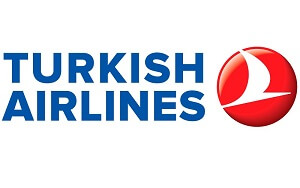
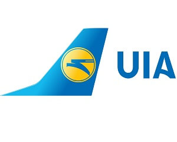

Турецька авіакомпанія здійснює рейси до 220 закордонних пунктів та 42 пунктів на території країни. Так, існують перельоти до Алжиру, Казахстану, Єгипту, Швеції, Італії, Іраку, Іспанії, Кувейту, Пакистану, Німеччини, Великобританії, Данії, тощо. Внутрішні лінії обслуговують такі міста, як Адана, Анкара, Анталія, Хаккарі, Спарта та інші. У 2017 році плануються рейси до Кракова, Ленкорані, Сіїрту, Харкова та Луксора.
У розпорядженні «Американ Ейрлайнс» знаходиться майже тисяча повітряних суден. Окрім основного хаба, перевізник має хаби в аеропортах Даллас/Форт-Верт, Маямі, Нью-Йорка, Чикаго, Сент-Луїса. Компанія уклала код-шерінгову угоду з 35 авіаперевізниками.

Компанія здійснює вантажні та пасажирські рейси у десятки міст і країн світу. В Азії — до Казахстану, Узбекистану, Туркменії, Азербайджану, Вірменії, Грузії, Ізраїлю, Туреччини, ОАЕ, Кіпру, Ірану, КНР, Шрі-Ланки, Таїланду. Європа представлена такими країнами: Австрія, Фінляндія, Бельгія, Хорватія, Франція, Болгарія, Німеччина, Швейцарія, Італія, Нідерланди, Португалія, Греція, Швеція, Великобританія, Литва. Також повітряні судна літають до США. Внутрішні авіалінії доставляють пасажирів у Вінницю, Дніпро, Харків, Львів, Одесу, Запоріжжя та Івано-Франківськ.